Order Ticket provides a compact widget for entering orders for a single, pre-selected instrument. From an Order Ticket, you can supply all of the information for an order and easily submit the order by clicking the appropriate action button.
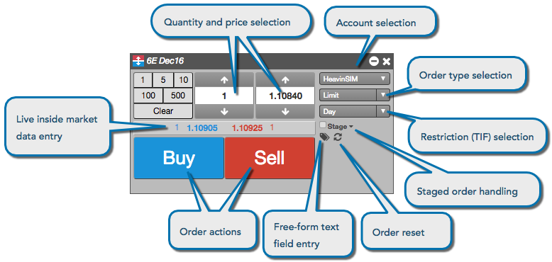
The account selector shows all accounts that have been assigned to you by your company administrator and have active connections to the exchange. Click the drop-down to select an account, which is required for submitting orders on TT.
{% include change-clearing-account.html %}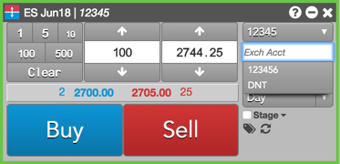
{% include change-clearing-account2.html %}The Order Ticket automatically lists all order types available for the associated instrument. The order types drop-down lists all of the order types natively supported for the instrument by the exchange and the available TT order types you can use. Additionally, if you have created your own algos or are associated with a third-party algo provider, those algos are also displayed as valid order types.
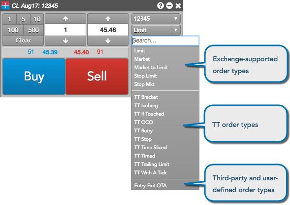
Note: The list includes only ADL algos and Order Ticket Algos (OTAs) you have permission to run.
If you select a TT Order type or custom algo order type, you can enter the additional information in the embedded panel. Based on the TT Order type, the panel might include tabs for additional parameters. For example, the following shows a fly-out dialog for a TT Bracket order type.
Note: You can click  to display the available templates and
to display the available templates and  to display all of the parameters in a flyout.
to display all of the parameters in a flyout.
For quicker access to order templates, you can display the template selector by enabling Algo templates from the Show/Hide context menu.
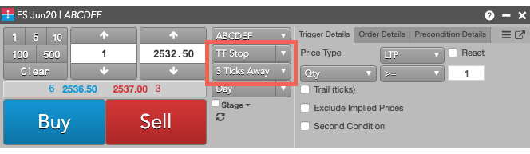
The order restrictions or time-in-force (TIF) options that the exchange supports for the instrument are also automatically listed in the TIF drop-down.
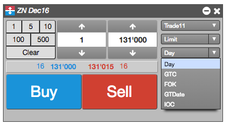
Free-form text fields allow you to send optional or additional information with an order.
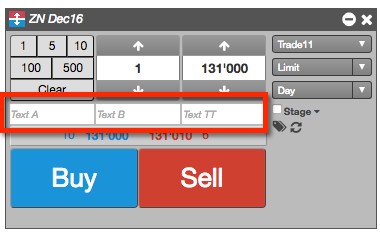
The reset icon allows you to reset the order ticket to the product defaults displayed when the ticket was opened.
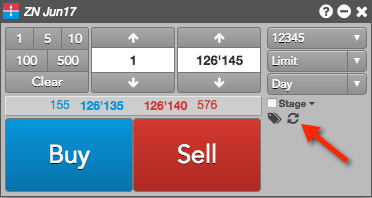
You can submit cross trades using the Order Ticket window in the Market Grid widget. In the Order Ticket window, the Cross Order Type is only available for exchanges (e.g., EEX) and accounts that support Cross Orders.
The TT platform supports cross trades at the following exchanges:
Using the Order Ticket, you can stage a care order that can be claimed by another user for order management and order execution.
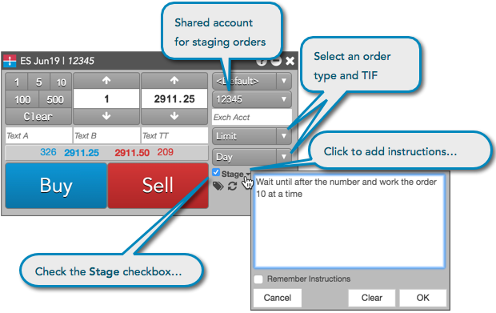
For more information about care orders, refer to Care Orders Overview.
When Enable broker mode is enabled in the Order Ticket settings, the Order Ticket displays a single Buy or Sell button based on whether you are entering a bid or ask. Click the Flip for Sell/Buy toggle button to quickly switch the direction of the main Buy/Sell button.
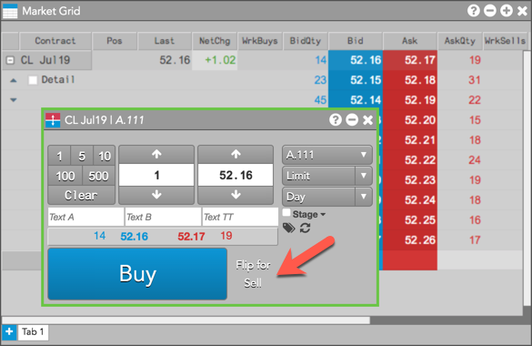
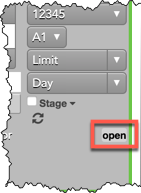
{% include confirm-orders.html %}To enter a Minimum Volume order using the Order Ticket, select "MinVol" as the natively supported order type. When selected, an additional order entry field called Minimum Qty is shown. Enter the minimum quantity amount for the order in this field.
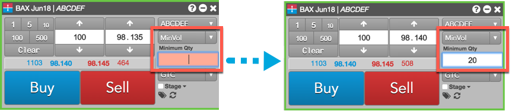